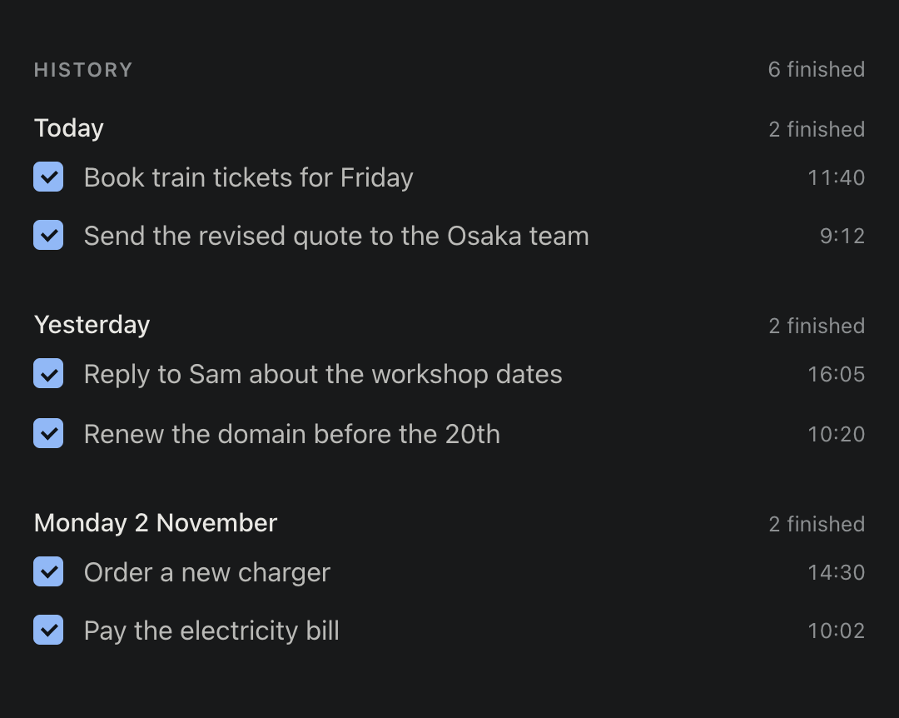

01 / Write
Type. Enter. Done.
⌥Space in any app. Write a line, press Enter. Each line shows how long it has waited.
⌥Spaceopen
Enteradd
⌘Enterdone
02 / Look back
Nothing is lost.
⌘Y shows every day on a calendar. Click a day, or search them all.

03 / Step away
Out of the way.
Close the window. Focus Zen waits in the menu bar, with no Dock icon.

04 / Private
Never leaves your Mac.
No account, no cloud, no tracking. One small file, on your Mac only.
~/Library/Application Support/com.focuszen.desktop/focus-zen.db
- No account, no sign-in
- No cloud, no sync
- No internet, no tracking
- Settings → Database shows the file
05 / Left out
Less to manage. More attention.
Nothing to organise
No projects, tags or due dates.
No noise
No notifications, badges or streaks.
Small and native
9.9 MB. Starts in a moment.
Open source
MIT licence, on GitHub.